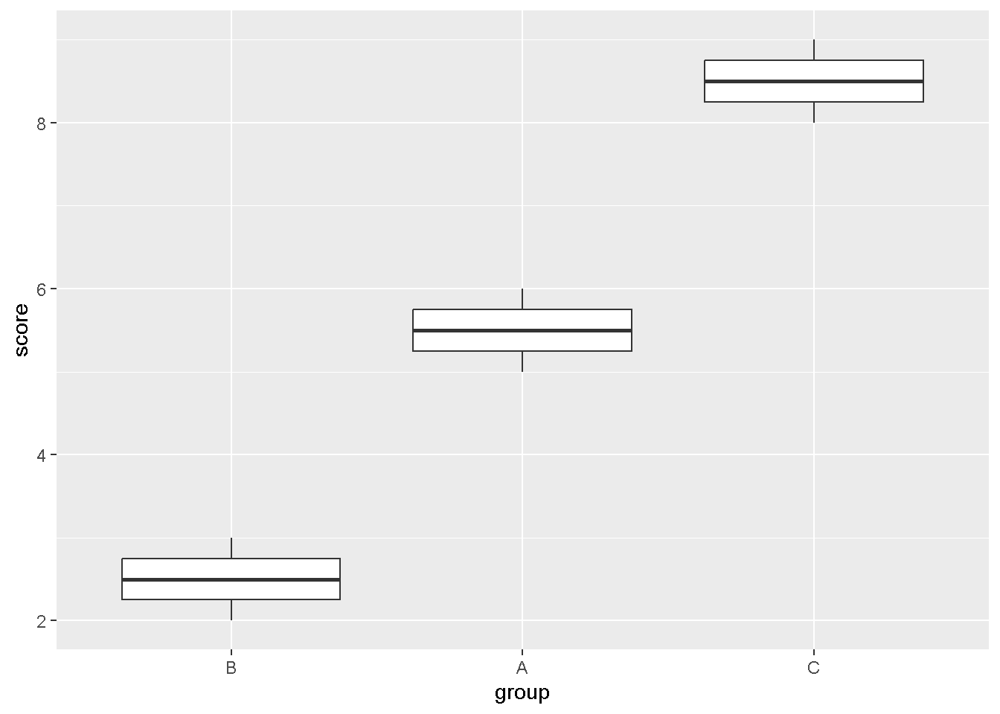

R Code Summary
Data visualization
ggplot(data, aes(...)) + geom_*()
- Maps variables to plot aesthetics (here:
displ(engine displacement)→ x,hwy(highway miles per gallon)→ y,class→ color). - Draws a layer (here points) using a
geom_*()function.
facet_wrap(~var)
- Splits one plot into multiple panels by a categorical variable.
- Lets you compare patterns across groups on the same axes/scales.
ggsave("file.png")
- Saves a plot object (or last plot) to a file.
- Controls output size via
widthandheight.
Spatial data
rnaturalearth::ne_countries(..., returnclass="sf")
- Downloads country boundaries from Natural Earth.
- Returns an
sfobject (geometry + attribute columns).
ggplot(sf_obj) + geom_sf()
- Plots spatial geometries stored in an
sfobject. - Automatically uses the geometry column for map drawing.
coord_sf(crs = "...")
- Reprojects spatial data to a chosen coordinate reference system (CRS).
- Changes the map’s appearance/distortion based on the projection.
Logical vectors
if_else(condition, true, false)
Code
# A tibble: 3 × 2
x sign
<dbl> <chr>
1 -2 negative
2 0 nonnegative
3 5 nonnegative- Creates a new vector by choosing between two values based on a condition.
- Is type-stable (returns consistent type across all rows).
case_when(...)
Code
# A tibble: 4 × 2
score letter
<dbl> <chr>
1 95 A
2 82 B
3 71 C
4 60 D - Applies multiple conditions in order; first match is used.
- Produces a single output column from many branching rules.
is.na(x)
- Returns a logical vector indicating which elements are missing.
- Often used for filtering, counting, or conditional replacement.
Numbers
count(x, wt = w)
Code
# A tibble: 2 × 2
team total_points
<chr> <dbl>
1 A 5
2 B 6- Groups by a variable and sums weights (
wt) instead of counting rows. - Produces a compact frequency/total table.
%/% and %% (integer division + remainder)
Code
# A tibble: 3 × 3
time hour minute
<dbl> <dbl> <dbl>
1 730 7 30
2 945 9 45
3 1205 12 5-
%/%divides and drops the remainder (integer division). -
%%returns the remainder (useful for splitting encoded numbers).
lead() / lag()
Code
# A tibble: 5 × 3
day value change_from_prev
<int> <dbl> <dbl>
1 1 10 NA
2 2 11 1
3 3 15 4
4 4 14 -1
5 5 20 6-
lag()shifts values down to compare with the previous row. -
lead()shifts values up to compare with the next row.
log2() / log10()
- Transforms multiplicative scale data into additive scale.
- Helps compress large ranges and reveal proportional changes.
Strings
str_c(...)
Code
[1] "Jack Dong" "Ada Lovelace"- Concatenates strings element-by-element (vectorized).
- Lets you control separators via explicit
" "orsep=patterns.
str_glue("...{var}...")
Jack scored 98 on the exam.- Builds strings using
{}placeholders for variables/expressions. - Makes readable “template” text for labels, messages, filenames, etc.
str_length() and str_sub()
[1] 10 10[1] "Mac" "psy"-
str_length()counts characters in each string. -
str_sub()extracts substring by start/end positions.
Regular expressions
str_detect(x, pattern)
Code
[1] TRUE FALSE TRUE- Returns TRUE/FALSE for whether each string matches the regex.
- Useful for filtering rows that contain a pattern.
str_extract(x, pattern)
Code
[1] "#A123" "#B55" NA - Extracts the first matching substring from each element.
- Returns
NAwhen no match exists.
str_replace() / str_replace_all()
[1] "orange pie" "orange juice"[1] "aX bX cX"- Replaces first match (
str_replace) or all matches (str_replace_all). - Great for cleaning text, standardizing formats, removing junk characters.
Factors
fct_reorder(f, x)
Code

- Reorders factor levels using a numeric summary (here mean score).
- Makes plots and tables follow a meaningful order.
fct_relevel(f, "level")
Code
[1] medium low high low
Levels: low medium high- Manually sets the order of factor levels.
- Useful when you want a specific “baseline” or display order.
fct_infreq() and fct_rev()
[1] cat dog dog dog bird
Levels: dog bird cat[1] cat dog dog dog bird
Levels: cat bird dog-
fct_infreq()orders levels from most frequent to least frequent. -
fct_rev()reverses the level order (often for plotting).
fct_recode() / fct_collapse()
Code
[1] 1st 2nd junior senior senior
Levels: 1st junior senior 2ndCode
[1] underclass underclass upperclass upperclass upperclass
Levels: underclass upperclass-
fct_recode()renames levels without changing grouping. -
fct_collapse()merges several levels into fewer categories.
Dates and times
today() / now() and ymd() / ymd_hms()
[1] "2026-04-16"[1] "2026-04-16 20:35:27 CDT"[1] "2026-02-20"[1] "2026-02-20 14:30:00 UTC"- Gets current date/time (
today,now) or parses strings into date objects. - Converts text into proper date/datetime types for math and plotting.
make_date() / make_datetime()
[1] "2026-02-20"[1] "2026-02-20 14:30:00 UTC"- Builds date/datetime from separate components.
- Helpful when your data has year/month/day in separate columns.
floor_date() / ceiling_date()
[1] "2026-02-20 14:00:00 UTC"[1] "2026-02-20 15:00:00 UTC"- Rounds date-times down/up to a specified unit (hour/day/week/etc.).
- Useful for aggregating by time bins.
with_tz() vs force_tz()
Code
[1] "2026-02-20 06:00:00 CST"[1] "2026-02-20 12:00:00 CST"-
with_tz()changes how the same instant is displayed in another time zone. -
force_tz()keeps clock time but changes the assumed time zone (different instant).
Missing values
tidyr::fill(cols)
Code
# A tibble: 5 × 2
group value
<chr> <int>
1 A 1
2 A 2
3 A 3
4 B 4
5 B 5- Fills missing values down (or up) using the nearest non-missing value.
- Useful for “merged-cell” style data.
coalesce(x, 0)
- Replaces
NAwith the first non-missing value among arguments. - Great for setting defaults (e.g., missing counts become 0).
na_if(x, sentinel)
- Converts “special codes” into real
NA. - Makes summaries and plots treat those values as missing correctly.
tidyr::complete(...)
Code
# A tibble: 6 × 3
student week score
<chr> <dbl> <dbl>
1 A 1 10
2 A 2 NA
3 A 3 12
4 B 1 9
5 B 2 NA
6 B 3 NA- Creates rows for missing combinations of keys (implicit missing → explicit).
- Helps you see gaps and then fill/plot time series cleanly.
anti_join(x, y)
Code
# A tibble: 1 × 2
id name
<dbl> <chr>
1 1 a - Returns rows in
xwhose keys do not appear iny. - Useful for finding mismatches or missing records.
Joins
left_join(x, y, by = ...)
Code
# A tibble: 3 × 3
id name grade
<dbl> <chr> <dbl>
1 1 A 90
2 2 B NA
3 3 C 85- Keeps all rows from
xand adds matching columns fromy. - Unmatched rows get
NAfor new columns.
inner_join() / full_join() / right_join()
# A tibble: 2 × 3
id name grade
<dbl> <chr> <dbl>
1 1 A 90
2 3 C 85# A tibble: 3 × 3
id name grade
<dbl> <chr> <dbl>
1 1 A 90
2 2 B NA
3 3 C 85# A tibble: 2 × 3
id name grade
<dbl> <chr> <dbl>
1 1 A 90
2 3 C 85-
inner_join()keeps only rows with matches in both tables. -
full_join()keeps everything from both;right_join()keeps all rows ofy.
semi_join() / anti_join()
# A tibble: 2 × 2
id name
<dbl> <chr>
1 1 A
2 3 C # A tibble: 1 × 2
id name
<dbl> <chr>
1 2 B -
semi_join()filtersxto rows that have a match iny(no extra columns added). -
anti_join()filtersxto rows that do not have a match iny.